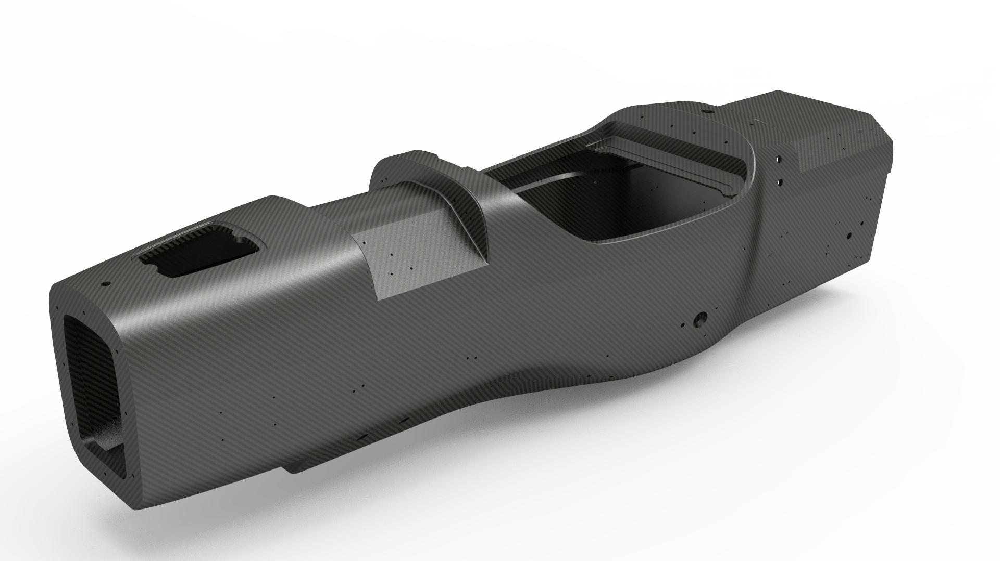
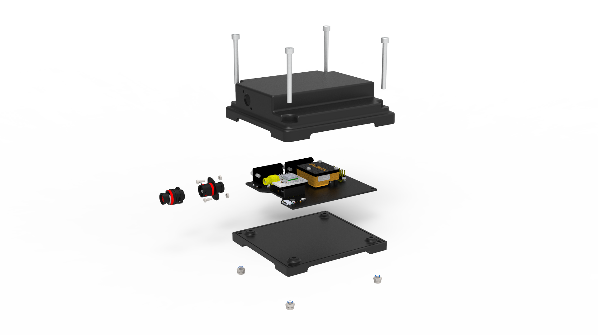
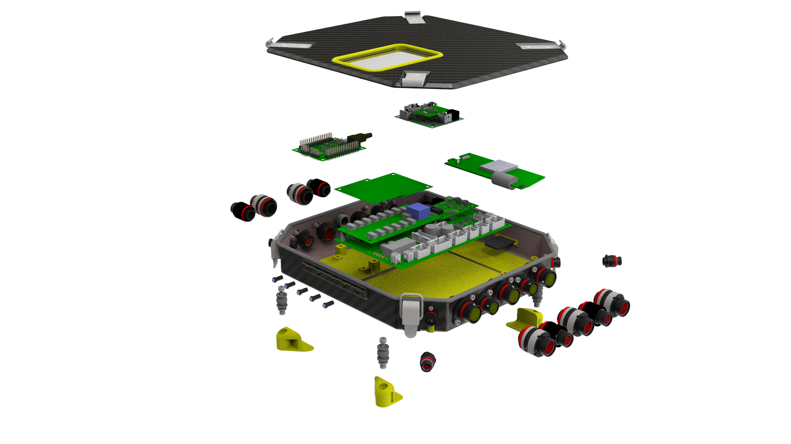

Renato Loureiro
Engineering Student at IST
Lisbon, Portugal
Interests
- Nonlinear Control
- Computer Vision
- Software development and applied mathematics
This can be your internal website page / project page



Lisbon, Portugal


